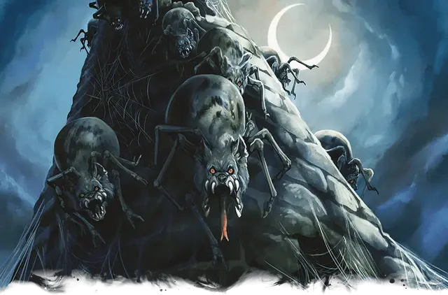

Паукодемон каккуу
Kakkuu Spyder-Fiend
Среднее Исчадие, обычно хаотично-злое

Класс Доспеха 15 (природный доспех)
Хиты 91 (14к8 + 28)
Скорость лазая 30 футов
| мод | спас | ||
|---|---|---|---|
| СИЛ | 17 | +3 | +3 |
| ЛОВ | 15 | +2 | +5 |
| ТЕЛ | 14 | +2 | +5 |
| мод | спас | ||
|---|---|---|---|
| ИНТ | 6 | −2 | −2 |
| МДР | 10 | +0 | +3 |
| ХАР | 10 | +0 | +0 |
Навыки Восприятие +3, Скрытность +5
Сопротивление урону огонь, холод, электричество
Иммунитет к урону яд
Иммунитет к состояниям отравление
Чувства тёмное зрение 60 футов, пассивное Восприятие 13
Языки понимает язык Бездны, но не говорит
Опасность 5 (1800 опыта)
Бонус мастерства +3
Особенности
Сопротивление магии. Каккуу совершает с преимуществом спасброски от заклинаний и прочих магических эффектов.
Паучье лазание. Каккуу может лазать по сложным поверхностям, включая потолки, без совершения проверок характеристик.
Чувство паутины. Находясь в контакте с паутиной, каккуу знает точное местоположение всех других существ, находящихся в контакте с той же паутиной.
Хождение по паутине. Каккуу игнорирует ограничения перемещения, вызванные паутиной.
Действия
Мультиатака. Каккуу совершает атаку Паутинным силком, использует Подтаскивание и совершает атаку Укусом.
Укус. Рукопашная атака оружием: +6 к попаданию, досягаемость 5 футов, одна цель. Попадание: 14 (2к10 + 3) колющего урона плюс 10 (3к6) урона ядом.
Подтаскивание. Каккуу подтаскивает всех схваченных с помощью Паутинного силка в пределах 60 футов существ на 30 футов к себе.
Паутинный силок. Дальнобойная атака оружием: +6 к попаданию, дистанция 30/60 футов, одно Большое или меньшее существо. Попадание: Цель становится схваченной (Сл высвобождения равна 13). Пока цель схвачена, она также опутана. Каждый схвативший существо паутинный силок можно атаковать и уничтожить (КД 10; 10 хитов; иммунитет к дробящему урону, урону психической энергией и ядом).
Описание
Демонические чудовища, сочетающие в себе худшие черты волков и пауков, передвигаются на раздутых паучьих телах и скрежещут волчьими головами. Паукодемоны обычно покрыты чужими внутренностями, поскольку жестокие убийства являются их любимым времяпровождением. Они сплетают прочную паутину и изобретательны в том, как использовать ее против добычи.
Они объединены в иерархию, основанную на силе и хитрости, где паукодемоны более высокого ранга доминируют над более низкими. Паукодемоны одинакового ранга борются друг с другом за продвижение по службе и охотно обращаются друг против друга, если предательство может улучшить их положение.
Паукодемоны преданно служат своему генералу, Пауку-Волку Миске [Miska the Wolf-Spider]. Хотя во время заточения Миски в Пандемониуме их редко можно было увидеть, они стали все чаще проявлять себя, когда Миска начал бороться за свое освобождение.
Паукодемон каккуу
Напоминающие крупных пауков, каккуу являются самыми многочисленными и наименее разумными из паукодемонов. В крупных конфликтах они служат пехотинцами, но предпочитают избегать более могущественных Исчадий, которые помыкают ими. Будучи предоставленными сами себе, каккуу прячутся в засаде и используют свою паутину, чтобы ловить добычу.